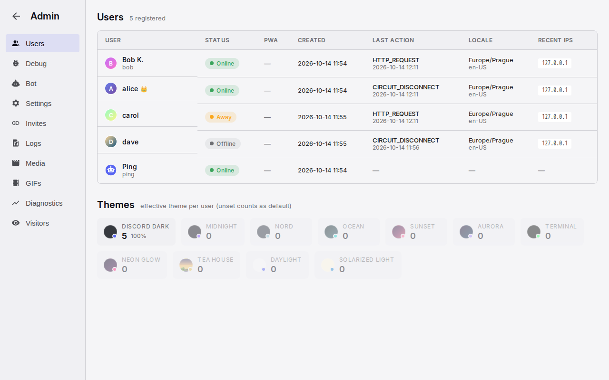

Administration
Administration is the admin's page for the server. It covers the people, the invites and login links, the registration switches and the bot. It also covers the server switches, the server's GIF library, the logs and the live diagnostics. There is one admin, the first human account on the server. Rooms are created and changed on separate pages that open from the sidebar. This page also specifies those room pages.
Anatomy

- Navigation. A 180 px column with a round back arrow, "Admin", and the tabs Users, Debug, Bot, Settings, Invites, Logs, Media, GIFs, Diagnostics, Visitors. On a phone, the tabs are a horizontal tab bar under the back arrow.
- Content. The open tab, with a title row (name and a count or subtitle), stat cards where the tab has them, filters, and tables that scroll sideways when wide.
- Tables. Headers in small capitals. A table adds 24 rows for each "Show more" tap, or 100 rows for each "Load more" page. On a phone, a wide table scrolls sideways and no column is hidden.
- Room pages. "Create Channel" and "Channel Settings", inside the chat frame, with the cards Channel Info, Permissions, History Visibility, Channel Order and Danger Zone.
Rules
Access and layout
AD-01Only the admin can open the page, from "Admin" in the status menu. Any other person goes to the lobby. The page is outside the chat frame and uses the theme's colours. The back arrow goes to the lobby. The back arrow is also present on phones.
AD-02Users opens first. A link to a tab, such as the one in the GIF picker, opens that tab. Users, Bot, Invites and Settings load with the page. Logs, Media and Visitors load when they open for the first time. GIFs loads again each time it opens. Diagnostics refreshes every 30 seconds while it is open.
AD-03Persistence is the optional saved copy of accounts, messages and settings. When the server runs without persistence, the top of the page shows "This server runs without persistence. Accounts, messages and settings last until the next restart." Logs, Media and Visitors then show "Not available without persistence." instead of an empty tab. With persistence, the server can start with only the newest messages of each conversation: a count and a number of days, both set in the server settings. Older messages stay in the saved copy. No one can read them, the admin included, until the limit changes and the server starts again.
Users
AD-04The Users table lists every account, including the bot, with the newest activity first. Each row shows the avatar, the display name with the admin crown, the username and a status pill. The pill is Online, Away, Invisible or Offline, and the admin sees Invisible as Invisible. The row also shows whether the installed app was seen, the creation time and the last action. It also shows the time zone and language, and up to five recent network addresses. The table is read when the page loads and does not change until the next load.
AD-05A tap on a row opens its detail. The detail shows the notification devices, the installed app and the effective theme. It also has a table of addresses with countries and a table of browsers. Both tables show the last seen time.
AD-06The page has no actions for an account. There is no disable, delete, rename, admin transfer or forced sign-out. The only rescue is a new login link from the Invites tab.
AD-07Under the table, Themes shows one card for each theme, with its count and share. The cards are in order of use, most used first. Unused themes are dimmed.
Debug
AD-08The message generator posts test messages into a chosen room. The admin chooses a count (default 200) and a span from an hour to a year. The generator spreads the messages over the span, in bursts. They are real messages from the admin and five fictional people. Generated messages add no unread counts.
Bot
AD-09Bot Settings shows the bot's fixed username, its display name and the welcome message. In the welcome message, "{0}" stands for the server name. "Save" confirms with "Saved!". The bot sends the welcome message one minute after a person's first session. The message includes the login link and, on phones, the install line.
Settings tab
AD-10Registration has three switches: "Close registration", "Require approval" and "Smart login". Each switch saves at once. Smart login is on by default. Their effects are on the sign-in page.
AD-11Pending Requests shows while someone waits for approval. Each request shows the username, how long ago it arrived, "Approve" and "Reject". The list updates automatically when a request arrives. For each request, the admin also gets a message from the bot. Pending requests are lost when the server restarts.
AD-12Link Previews has "Enable link previews" (on by default) and "Enable media caching" (off by default). When the downloader is missing, "Enable media caching" is disabled and shows a note. Both switches apply at once to every open chat.
AD-13GIFs has the content rating of the provider: G, PG, PG-13 or R. The default is PG. A change applies to the next search. The tab also shows "Provider: configured" or "Provider: not configured". Under it, an instruction box "Klipy API key" shows the state of the key and, open, the steps to get a free key at partner.klipy.com, where to put it and that a restart applies it. The box says that own uploads, favourites and the server library work without a key. <!-- lint: allow -->
AD-14Deployment shows read-only instruction boxes for the settings that need a matching DNS record. These settings are the upload subdomain and the IPv4 beacon. Each box shows the current state of its setting.
Invites and login links
AD-15The create form makes an invite for someone new, with a private note and an expiry (never, 1, 7 or 30 days), or a new login link for an existing person. The bot is not offered. A new login link replaces the person's current link and sends them the bot's rescue message. The form asks for no confirmation.
AD-16Open invites lists the unclaimed invites. Each row has the link, a copy control, the note, the creation time, the expiry time, an expiry change and "Revoke". User login links lists the active or expired link of every person. Each row has the status, the link, who created the link and how often it was used. When the admin may not see the link, the row shows "🔒 hidden" instead. Rows for active links also have the same two controls. Expired rows have no controls. A new expiry counts from the time of the change.
AD-17The admin sees the code of a link only when the admin created the link and the link is still unused. A link that a person made for themselves is always hidden.
Logs, Media, Visitors
AD-18Logs lists the actions of signed-in people, newest first. Each row shows the time, user, action, address and detail. The tab has an action filter and a username filter. A page has 100 entries.
AD-19Media lists every upload with a preview, the time, user, file name, type, size and processing time. The tab has a type filter and a username filter. Stat cards show the converter's availability, total storage, images and videos.
AD-20Visitors lists anonymous visits and failed sign-ins with the address, action, reason and browser. It has stat cards for visits, failures, unique addresses and today. A tap on a row shows the full detail with the country.
GIFs tab and the server library
AD-21The server library is a set of GIFs that the admin selects. Every person sees it as a separate tab in the picker. Everyone can search it, and it ranks above the general pool. The admin manages it with the same library manager as My GIFs, without a quota. The admin can add files, import a zip, export, and use folders and tags. "Delete" removes the file for everyone. "✕" only takes the GIF out of the library.
AD-22The tab opens with stat cards for the converter's availability, total storage, custom GIFs and the provider cache. Under the library is a table of every GIF that the server knows, both custom uploads and provider cache. The table has a filter: all, custom, provider cache, favourited, server library. Each row shows the preview, date, source, uploader, format, dimensions, size, uses, favourites and tags. The admin edits tags in place, as in My GIFs. The "★ server" action adds the GIF to the library or removes it. The "Delete" action asks "Sure?" first.
AD-23A delete by the admin removes the GIF from the favourites of every person. A GIF that messages use keeps its file, so the history still shows it. An unused GIF is removed with its files. The table confirms with "Deleted." or "Removed from everyone's libraries; the file stays while messages use it."
Diagnostics
AD-24Stat cards show users, sessions, messages, connections and channels from the latest 30-second sample.
AD-25The sessions table has one row for each session, except the bot's sessions. The columns are user, device and address, transport, connected, visible, status, the open conversation, last input, last report and age. A row that counts as visible while it has no connection shows in the warning colour. Tooltips on the headers explain the Visible, Viewing, Last input and Heartbeat columns.
AD-26The latency table shows the waits of each person since the last restart. One row per person carries the numbers of all their connections. Under it, one row per live connection shows that connection's numbers, and the last 50 closed connections show in grey under their person. The waits are: the round trip; send, from the tap to the own message rendered; the server's time in a send; open, from the tap on a conversation to the server's messages on screen; older, from the scroll to the older messages in place; start, from the page load to the first conversation's messages on screen; reconnect, from a lost connection, or a return to the tab, to the conversation back in sync. Each wait shows its average and maximum. The round trip also shows its last value; start and reconnect show their last value and maximum. Slow calls count the requests the server took over 100 ms to process. People with the slowest average round trip come first. A row shows in the warning colour when it uses a fallback transport or its average round trip is over 250 ms. A hidden tab measures no round trip.
AD-27Push notifications shows whether the keys are configured and valid. The push audit lists the last 200 notification decisions (sent, or suppressed by a visible session). Each decision shows the unread count, devices and sessions at that moment. The push audit also lists the last 200 results with sent, failed and total. The unread audit lists the last 200 changes to direct-message counts, with their trigger and the device's state. All three are kept in memory and cover the time since the last restart.
AD-28Three charts cover the last seven days, with one point for each 30 seconds. They show users and sessions, active and disconnected connections, and total messages. They use the theme's colours.
Rooms
AD-29"Add Room" at the end of the sidebar opens Create Channel. The gear on a room row opens Channel Settings. Both pages are for the admin only. Both are in the chat frame and have a back arrow. A visit by a non-admin, or with an unknown room id or a direct message id, goes to the lobby.
AD-30Channel Info has the name and the description. The name is lowercase, has no spaces, has at most 50 characters and is unique. A name with a space is refused, and "Lowercase, no spaces." shows in red. The description has at most 500 characters and shows at the top of the room's history. An empty description means the default "This is the beginning of #{name}".
AD-31Permissions offers "Everyone" and "Admin Only". An admin-only room is visible to everyone and read-only for others.
AD-32History Visibility offers Unlimited, 1 Day, 3 Days, 1 Week, 2 Weeks, 1 Month, 3 Months, and "Only show messages since user joined". A new room starts with 1 Month and with the since-joined option on. Admins always see everything.
AD-33Channel Order shows when the admin edits a room. It lists every room with "Move up" and "Move down". A move saves at once and changes the sidebar order for everyone.
AD-34"Save Changes" is enabled after a change, and it returns to the room. When there is an error, the page stays open and shows the error. "Cancel" returns without saving. Create opens the new room. The new room goes to the bottom of the order. A name already in use shows "A channel with that name already exists." when editing. When creating, it shows "Failed to create channel. The name may already be taken."
AD-35Danger Zone shows when the admin edits a room other than the lobby. The first tap on "Delete Channel" arms it and shows "Click again to confirm". The second tap deletes the room and goes to the lobby. The mute choices of every person for the room are cleared. Open chats leave the room at once.
AD-37Pinned Messages offers "Admin Only", "Everyone" and "Selected People". With "Selected People", a checklist of every person except the admin and the bots shows below the cards. The checked people can pin and unpin in the room. The admin always can. A new room starts with "Admin Only". The setting saves with "Save Changes". A name in the list that is not a user is refused with "Unknown user: {name}.". See Message row and Header.
Server configuration
AD-36The server's configuration and data folders hold the project name, the playful text lists and the public address for links. They also hold the branding files (icons, the installed app's name and colours) and the custom welcome page. These items are not on this page. A text edit applies the next time the text shows. A change to the branding files applies without a rebuild. Custom emoji are files in a server folder. The server reads them at startup.
States
| State or trigger | Input | What the user sees |
|---|---|---|
| Non-admin opens /admin | all | The lobby opens. |
| Row tap in Users | mouse, touch | A detail row opens with tags and tables. Another tap closes it. |
| Generate | mouse, touch | "Generating..." then "Generated {n} messages spread across {h}h". The messages appear in the room. |
| Bot Save | mouse, touch | "Saving..." then "Saved!". |
| Registration switch | mouse, touch | The switch saves at once. The login page changes for the next visitor. |
| Pending request arrives | all | The row appears, and the bot's message arrives. |
| Approve or Reject | mouse, touch | The person's login page continues or shows the rejection. |
| Create link for a person | mouse, touch | "New link for {username} created. Their old one no longer works."; the person gets the bot's message. |
| Copy link | mouse, touch | "Copied!" for 2 s. |
| Revoke | mouse, touch | The row disappears. Devices stay signed in. |
| ★ server | mouse, touch | The GIF is added to or removed from the server library at once. |
| Delete in the GIFs table | mouse, touch | "Sure?", then "Deleted." or the kept-file line. |
| Diagnostics open | all | Tables and charts refresh every 30 s. Expanded tables stay expanded. |
| Ghost session | all | The row shows in the warning colour. |
| Create Channel with a name | keyboard, mouse, touch | "Create Channel" is enabled. The new room opens at the bottom of the list. |
| Duplicate name | keyboard, mouse, touch | Editing: "A channel with that name already exists." Creating: "Failed to create channel. The name may already be taken." |
| Move up or down | mouse, touch | The order changes at once for everyone. |
| Delete Channel | mouse, touch | "Click again to confirm", then the lobby. |
| Phone | touch | A horizontal tab bar shows. Wide tables scroll sideways. |
Wording
| Where | Text |
|---|---|
| Navigation | "Admin"; "Go back"; "Users"; "Debug"; "Bot"; "Settings"; "Invites"; "Logs"; "Media"; "GIFs"; "Diagnostics"; "Visitors" |
| Without persistence | "This server runs without persistence. Accounts, messages and settings last until the next restart."; "Not available without persistence." |
| Users | "Users"; "{n} registered"; columns "User", "Status", "PWA", "Created", "Last Action", "Locale", "Recent IPs"; pills "Online", "Away", "Invisible", "Offline"; "Installed"; "Push {n} sub(s)"; "No push"; "PWA installed ({date})"; "No PWA"; "{theme} (default)"; "IP Addresses"; "User Agents"; "Themes"; "effective theme per user (unset counts as default)" |
| Debug | "Message Generator"; "Generate test messages for debugging"; "Channel"; "Number of messages"; "Spread across"; "Last 1 hour" … "Last 1 year"; "Generate {n} messages"; "Generating..."; "Generated {n} messages spread across {h}h"; "Error: {message}" |
| Bot | "Bot Settings"; "System bot configuration"; "Username"; "Username cannot be changed after creation"; "Display Name"; "Welcome Message"; "Sent to new users as a DM. Use {0} for the server name. Every new user also gets their login link; mobile users get a PWA install link."; "Save"; "Saving..."; "Saved!" |
| Registration | "Registration"; "Control who can join"; "Close registration"; "Block all new signups. Login page shows \"temporarily closed\"."; "Require approval"; "New users must wait for admin approval before joining."; "Smart login"; "Auto-login returning users from the same IP address without secret code."; "Pending Requests"; "{n} waiting"; "Approve"; "Reject" |
| Link previews | "Link Previews"; "OpenGraph preview cards"; "Enable link previews"; "Show OpenGraph preview cards below messages with URLs."; "Enable media caching"; "Auto-download videos/audio from YouTube, Spotify, SoundCloud (under 10 min) for inline playback."; "yt-dlp not found on this system." |
| GIF rating | "GIFs"; "Klipy content rating"; "Content rating"; "How strictly Klipy filters search and trending results. G = strictest (kid-friendly). PG = mild (default). PG-13 = some edgy content. R = anything goes."; "Provider: configured"; "Provider: not configured" |
| Deployment | "Deployment"; "Set in appsettings.json, per instance"; "Upload subdomain (tus)"; "IPv4 beacon" |
| Invites | "Invite & Login Links"; "{n} open · {m} active"; "For"; "Someone new (invite)"; "Note"; "for Tom"; "Expires"; "Never"; "In 1 day"; "In 7 days"; "In 30 days"; "Create link"; "Invite created"; "New link for {username} created. Their old one no longer works."; "An invite lets whoever opens it pick a username and join, even while registration is closed. A link for an existing user replaces their current one (the rescue for someone locked out of every device); they get a bot DM about it. Codes stay readable here only until the link is first used."; "Open invites"; "No open invites."; "Copy link"; "Copied!"; "Change expiry"; "Revoke"; "User login links"; "No user links yet."; "Active"; "Expired"; "🔒 hidden"; "Only the user can see this code"; " by admin"; "{n}× · {time} ago" |
| Logs | "Action Logs"; "{n} loaded"; "All actions"; "Filter by username..."; "Load more"; "No log entries found." |
| Media | "Media"; "{n} files"; "FFmpeg"; "Available"; "Unavailable"; "Total Storage"; "Images"; "Videos"; "No media uploads found." |
| GIFs | "{shown} of {total} entries"; "FFmpeg"; "Total Storage"; "Custom GIFs"; "Provider Cache"; "Deleted."; "Removed from everyone's libraries; the file stays while messages use it."; "Server library"; "A curated GIF set every user sees: its own picker tab, searchable by everyone, ranked above the general pool. Import files or a zip, organize with folders. Promote existing entries from the table below."; "All entries"; "Custom uploads"; "Provider cache"; "⭐ Favorited"; "☆ server"; "★ server"; "Add to server library"; "Remove from server library"; "Delete this GIF everywhere"; "Sure?"; "No GIFs in the library yet."; "No GIFs match this filter."; "The server library is empty — add GIFs above to give everyone a curated set." |
| Diagnostics | "Diagnostics"; "Live system metrics"; stat cards "Users", "Sessions", "Messages", "Connections", "Channels"; "Sessions — presence truth table" with columns "User", "Device", "Transport", "Connected", "Visible", "Status", "Viewing", "Last input", "Heartbeat", "Age"; "No active sessions."; "Latency by user"; "No connections tracked yet."; columns "Who", "Connection", "RTT last/avg/max", "Send avg/max", "Server send avg/max", "Open room avg/max", "Older avg/max", "Start last/max", "Reconnect last/max", "Slow calls"; "{n} live"; "no connection"; "Push notifications"; "✅ Configured — VAPID keypair verified at startup."; "❌ DISABLED — VAPID keypair is invalid."; "⚠️ Not configured — no VAPID keys set."; "Push audit — decisions & results"; "No push activity since restart."; "push"; "suppressed: Online + visible"; "Unread audit — DM badge changes"; "No DM unread activity since restart."; "Users & Sessions"; "Connections: Active vs Disconnected"; "Messages" |
| Visitors | "Visitors"; "{n} visits tracked"; "Total Visits"; "Login Failures"; "Unique IPs"; "Today"; "All"; "Visits only"; "Login failures only"; "No visitor data yet. Visitors are tracked when they load the login page."; "Wrong passphrase"; "Multi-device blocked"; "Registration closed"; "Bot username"; "IP mismatch"; "Approval pending" |
| Room pages | "New Channel"; "#{name} Settings"; "Channel Settings"; "Create Channel"; "Channel Info"; "Name"; "channel-name"; "Lowercase, no spaces."; "Description"; "Shown at the top of the channel. Leave blank for the default \"This is the beginning of #channel\" message."; "{n}/500"; "Permissions"; "Who can send messages in this channel"; "Everyone"; "All users can send messages"; "Admin Only"; "Only admin can send messages (read-only for others)"; "History Visibility"; "How far back non-admin users can scroll through message history"; "Unlimited"; "1 Day"; "3 Days"; "1 Week"; "2 Weeks"; "1 Month"; "3 Months"; "Only show messages since user joined"; "Each user only sees messages posted after they signed up. When combined with a time limit, the more restrictive cutoff applies. Admin always sees full history."; "Channel Order"; "Use the arrows to reorder channels in the sidebar"; "Move up"; "Move down"; "Cancel"; "Save Changes"; "Saving..."; "Creating..."; "Danger Zone"; "Delete this channel"; "This action cannot be undone. All messages will be lost."; "Delete Channel"; "Click again to confirm"; "Channel name is required."; "A channel with that name already exists."; "Failed to delete channel."; "Pinned Messages"; "Who can pin and unpin messages in this channel. Admin always can. Up to 3 pins."; "Only admin can pin messages"; "All users can pin messages"; "Selected People"; "Only the people checked below can pin messages"; "No other people yet."; "Unknown user: {name}." |
Related
- Sign-in and sessions for registration, invites, links and the bot's messages.
- Header, sidebar and overlays for the sidebar's rooms, Add Room and the gear.
- Timeline and media for history visibility as people see it.
- Emoji and GIF pickers for the server library in the picker.
- Notifications and unread for what the push and unread audits record.
- Presence for the sessions table's columns.